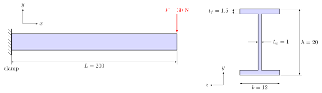
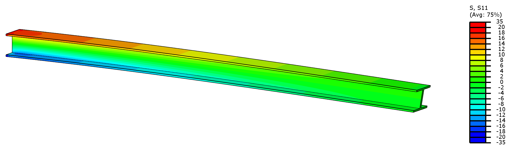
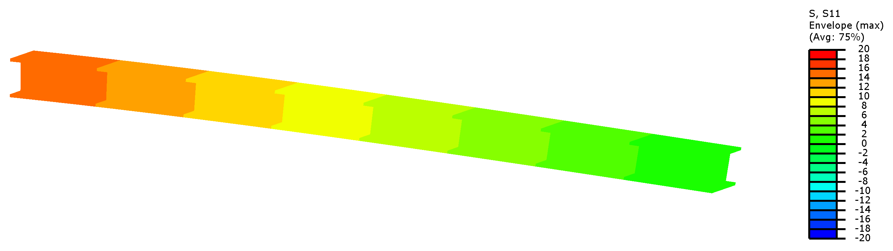
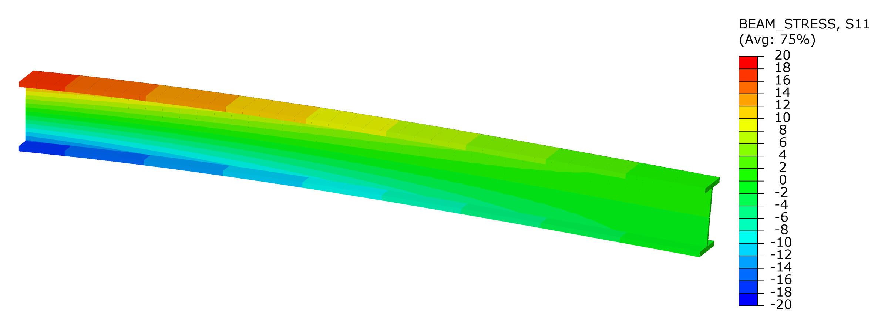
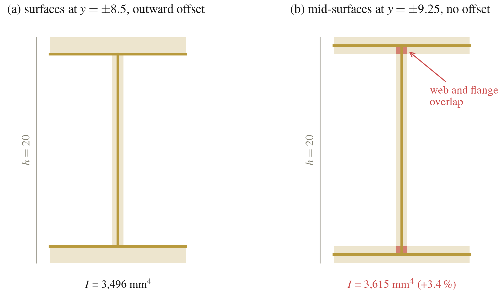
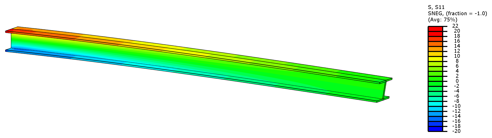
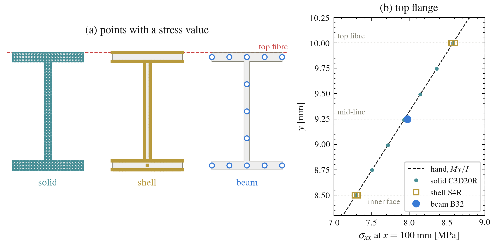
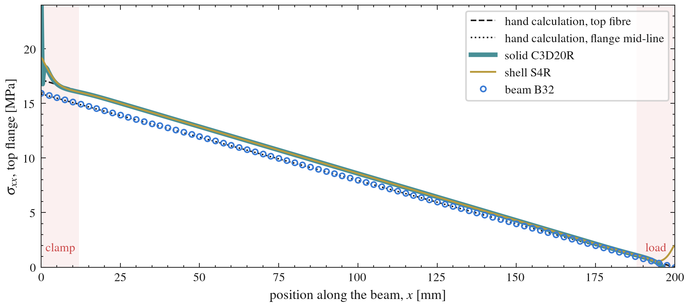
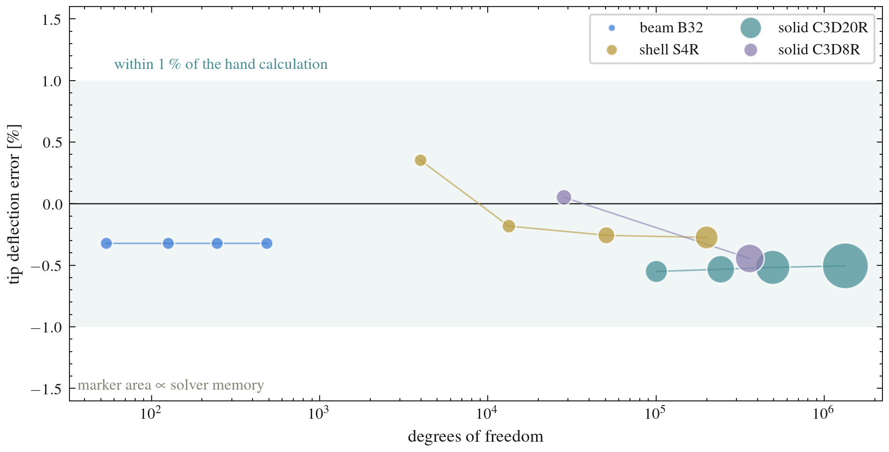
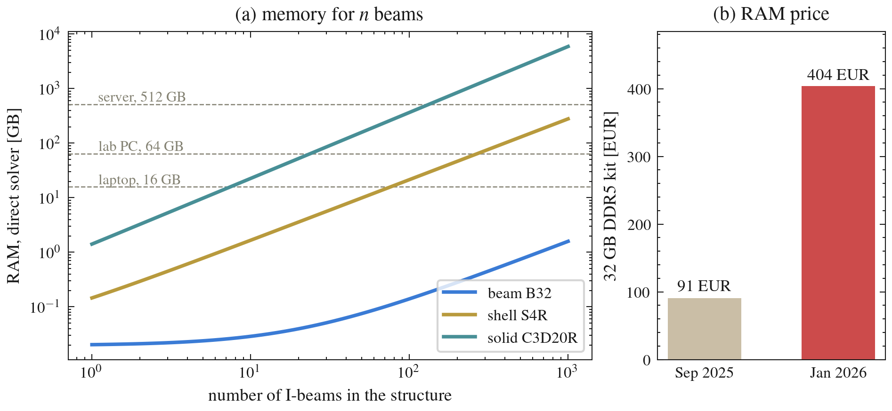

We model the same I-beam as a solid, a beam and a shell, and look at the main differences between the three modelling approaches.

| Value | |
|---|---|
| Length | \(L = 200\) along \(x\) |
| Clamp / tip | \(x = 0\) / \(x = 200\) |
| Tip force | \(F = 30\) N in \(-y\) |
| PMMA | \(E = 2000\), \(\nu = 0.4\) |
| Abaqus I profile | |
| \(l,\ h\) | 10, 20 |
| \(b_1,\ b_2\) | 12, 12 |
| \(t_1,\ t_2,\ t_3\) | 1.5, 1.5, 1 |
| \(n_1\) | \((0, 0, -1)\) |
| Shell model | |
| Flanges | \(y = \pm 8.5\), \(t = 1.5\), offset outward |
| Web | \(z = 0\), \(t = 1\) |
Some quick hand calculations. The second moment of area of the I-section and the shear modulus are
\[I = \frac{b h^3 - (b - t_w)(h - 2 t_f)^3}{12} = 3496 \text{ mm}^4, \qquad G = \frac{E}{2(1+\nu)} = 714 \text{ MPa}.\]We use the Timoshenko beam formulation, which adds the shear deformation of the web to the bending (Euler–Bernoulli) deflection. The shear is carried by the web, with area \((h - t_f)\, t_w = 18.5\) mm²:
\[\delta = \underbrace{\frac{F L^3}{3 E I}}_{\text{bending}} + \underbrace{\frac{F L}{G \,(h - t_f)\, t_w}}_{\text{shear}} = 11.44 + 0.45 = 11.90 \text{ mm}.\]The shear term is 4 % of the deflection. Our B32 element inside ABAQUS is also a Timoshenko (shear-flexible) element, so the beam model includes it as well. The largest bending stress is at the clamp, in the top and bottom:
\[\sigma_{\max} = \frac{F L}{I}\,\frac{h}{2} = 17.2 \text{ MPa}.\]The section, the C3D20R mesh and the Load step are already there.
CF2 = -30 on the reference point and run.
If you build the part from a sketch and extrude it, Abaqus by default extrudes along \(z\). The beam axis is then \(z\) and not \(x\), so \(\sigma_{xx}\) of the beam is S33 in Abaqus. You can rotate the instance in the Assembly to put the beam along \(x\). If you leave it as it is, \(\sigma_{xx}\) corresponds to S33.
For the beam, the part is a 1D wire of length \(L\) in 3D space.
Load step, clamp the vertex at \(x = 0\), CF2 = -30 directly on the vertex at \(x = 200\). No coupling is needed, because a beam node already represents the whole cross-section.A beam only has stresses at its section points. By default Abaqus writes points 1, 5, 9 and 13, the flange tips (see plot below in the comparison section) for a I-profile. Different profiles have different section points (check the documentation for more). A contour of S11 paints the whole rendered profile with the value of one section point, chosen under Result → Section Points. With SF in the output, Abaqus can also plot BEAM_STRESS, which is computed from the section forces and varies over the height of the profile like in the solid.


For the shell model, we are going to do this in 3 parts according to the sketch. The flanges are drawn at \(y = \pm 8.5\), where they meet the web.
Flange (1.5 mm) and Web (1 mm).Load step, clamp the three edges at \(x = 0\).CF2 = -30 on it and run.

| Model | \(\delta\) (mm) | DOF | Memory |
|---|---|---|---|
| Hand | 11.90 | – | – |
| Solid C3D20R | 11.83 | 242,340 | 1.4 GB |
| Beam B32 | 11.86 | 54 | 24 MB |
| Shell S4R | 11.86 | 50,658 | 150 MB |
All three models give the same tip deflection, within 0.6 % of each other and of the hand calculation. The beam gets there with 54 DOF, the solid needs more than 240,000.

The stresses agree too, more or less. The 1D beam model has no section point at the top fibre (top part of the top flange), so its largest stress is read at the flange mid-line which is around 7 % lower.

Away from the ends, the three models give the same results. Only the solid and the shell see the clamp and the load introduction.

Refining the mesh does not change the deflection of any model, it only costs more memory and time.
What would happened if we had a model with 1000 I-beams?

| 1000 I-beams | RAM | EUR, Jan 2026 |
|---|---|---|
| Beam | 1.6 GB | 20 |
| Shell | 279 GB | 3,519 |
| Solid | 5.9 TB | 74,704 |
So what you should do? Always depends on the question and your goal. If the general behavior of the structure is the main goal, then using the 1D beam elements could be sufficient. However if you are really interested in specific details, interactions between beams or around bolts, then a Shell or a Solid model would be the most adequate.
it is up to you to figure out what is the best modelling techniques for your case while also considering the cost.